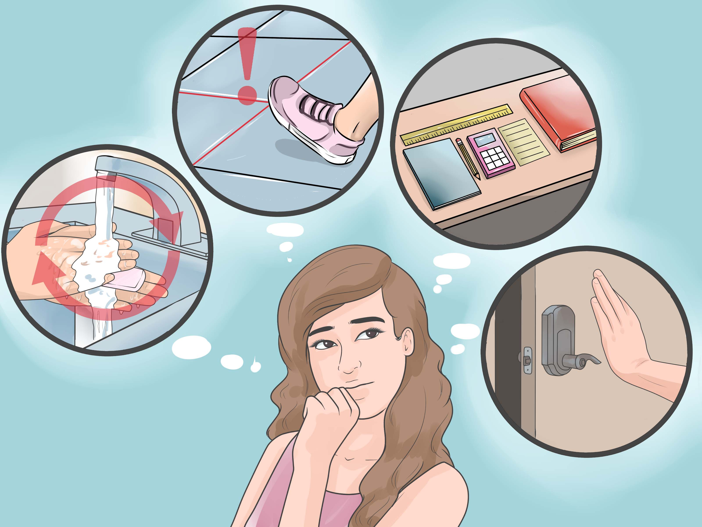

During a depressive episode, the person experiences depressed mood (feeling sad, irritable, empty) or a loss of pleasure or interest in activities, for most of the day, nearly every day, for at least two weeks. Several other symptoms are also present, which may include poor concentration, feelings of excessive guilt or low self-worth, hopelessness about the future, thoughts about dying or suicide, disrupted sleep, changes in appetite or weight, and feeling especially tired or low in energy.
In some cultural contexts, some people may express their mood changes more readily in the form of bodily symptoms (e.g. pain, fatigue, weakness). Yet, these physical symptoms are not due to another medical condition.During a depressive episode, the person experiences significant difficulty in personal, family, social, educational, occupational, and/or other important areas of functioning.
A depressive episode can be categorised as mild, moderate, or severe depending on the number and severity of symptoms, as well as the impact on the individual’s functioning.
This is actually a group of disorders. Included in the group are social anxiety disorder, phobias about certain things, generalized anxiety disorder, panic disorder, and agoraphobia. People with these disorders will often feel exceedingly worried about commonplace situations. You might have sudden anxiety or terror that could culminate in panic attacks.
Schizophrenia is a chronic, severe, debilitating mental illness characterized by disordered thoughts, abnormal behaviors, and anti-social behaviors. It is a psychotic disorder, meaning the person with schizophrenia does not identify with reality at times.Schizophrenia in young children is rare. The National Institute of Mental Health (NIMH) estimates only 1 in 40,000 children experience the onset of schizophrenia symptoms before the age of 13.

Obsessive-compulsive disorder (OCD) is one of a number of obsessive compulsive and related disorders that has irresistible ideas or images (obsessions) and/or specific rituals/behaviors or mental acts (compulsions) that may be driven by obsessions as characteristics of the illness.OCD occurs in a small percentage of populations worldwide in every culture.
The average age for OCD to begin is 19 years of age, and it usually begins by the time the individual is 30 years old.
People with OCD are at risk for also suffering from anxiety disorders.
While there is no known specific cause for OCD, having other family members with the condition and an imbalance of the brain chemical serotonin increase the likelihood of OCD occurring.
A health care professional diagnoses OCD by looking for signs and symptoms of this and other emotional problems, as well as assessing for the presence for a medical condition that might be a contributing to developing the disorder.
OCD most likely improves when treated with a combination of behavior therapies like exposure and ritual prevention, group or individual cognitive behavioral therapy, and medications.